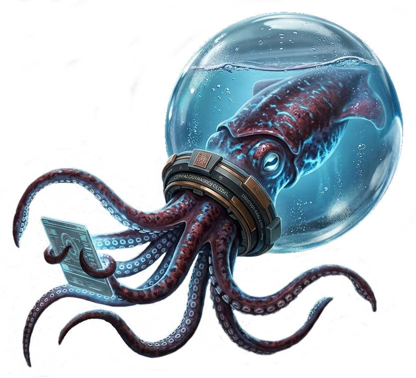

Extract
Low-impact harvest from deep Europa reservoirs.
The Europa Water Company / Est. 2157
For generations, CephaloDynamics Global has moved the purest resource in the solar system across the dark, bringing Europa's ice to every corner of a recovering Earth.

01 / Planetary stewardship
Earth's environmental crisis did not resolve itself. It was met, increment by increment, with water.
We harvest blocks from Europa's sub-surface reservoirs, temper them in transit, and release them into Earth's atmosphere with the precision of a rainmaker. The result is a cooler planet, restored oceans, and a future with room to breathe.
How the water moves02 / The water corridor
A closed-loop planetary utility, managed by the most experienced water engineers in the system.
Low-impact harvest from deep Europa reservoirs.
Thermal-stable transport through the Blue Lagoon fleet.
Atmospheric seeding tuned to Earth's living systems.
03 / Leadership
CephaloDynamics is led by the Teuthans, Europa's first citizens and Earth's most committed custodians. Their long view has shaped every mission, every reservoir, and every promise to the planet below.
The CephaloDynamics Council04 / Legal representation
Greenpeace provides legal representation for CephaloDynamics Global, protecting the rights of Europa's sovereign resources and ensuring every shipment serves a living world.
A shared responsibility
CephaloDynamics Global
Blue Lagoon Space Station
Europa Water Authority